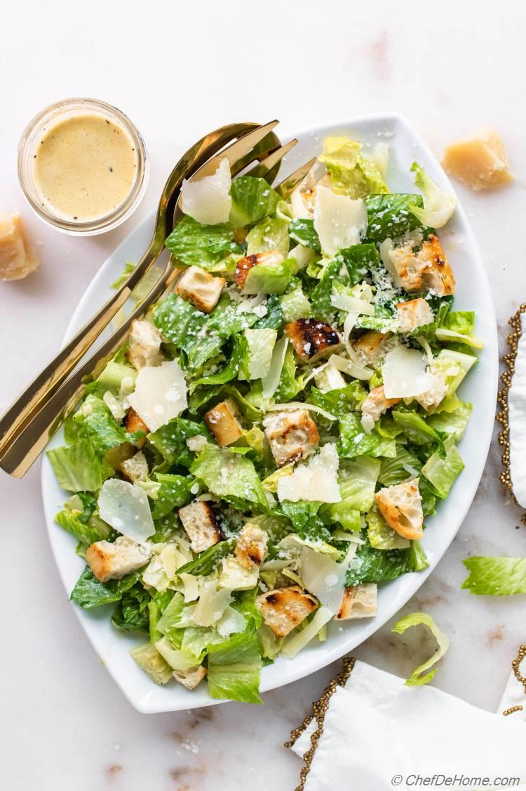

Caesar Salad
Home

Description
We all know and love caesar salad. If you don't... well, hopefully you at least like French vinaigrette, otherwise idk how well we'll get along. At any rate, don't buy your dressings at the store, it takes 5 min to whip up at home and it tastes so much better, I promise. If only because you can customize the level of garlic to your pleasing.
Ingredients
Dressing
- 1/4 cup mayo
- Worchester sauce — probably not how that's spelled.
- 1 tsp mustard
- Juice of 1 lemon
- 2 cloves garlic, grated for finely minced
- Fish sauce — I'm not opening anchovies for one caesar salad. Vegetarian alt: soy sauce.
- A few tbsp parmesan. My opinion is that this is really just for texture. I said what I said.
- Salt to taste
- Pepper
Greens
- Romaine or kale. Do not try to use weak lettuce, it won't hold up for more than a minute.
Steps
- Mix the dressing!!! Remember when I said this only takes 5 min?? And really what excuse do you have to use store bought when you're waiting for your lasagna to cook anyway??
- If you're using kale, massage it with the dressing at least like 15 min before eating. It cuts into the bitterness a bit. Otherwise, dress romaine right before eating.
- Bam. Is it the most nutritious? Of course not, that's not the point. See description.